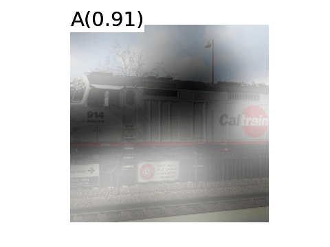

Neurocomputing
Recurrent neural networks
Professur für Künstliche Intelligenz - Fakultät für Informatik
Problem with feedforward networks
- Feedforward neural networks learn to associate an input vector to an output.
\[\mathbf{y} = F_\theta(\mathbf{x})\]
- If you present a sequence of inputs \(\mathbf{x}_0, \mathbf{x}_1, \ldots, \mathbf{x}_t\) to a feedforward network, the outputs will be independent from each other:
\[\mathbf{y}_0 = F_\theta(\mathbf{x}_0)\] \[\mathbf{y}_1 = F_\theta(\mathbf{x}_1)\] \[\dots\] \[\mathbf{y}_t = F_\theta(\mathbf{x}_t)\]

- Many problems depend on time series, such as predicting the future of a time series by knowing its past values.
\[x_{t+1} = F_\theta(x_0, x_1, \ldots, x_t)\]
- Example: weather prediction, financial prediction, predictive maintenance, natural language processing, video analysis…
Recurrent neural network

A recurrent neural network (RNN) uses it previous output as an additional input (context).
All vectors have a time index \(t\) denoting the time at which this vector was computed.
The input vector at time \(t\) is \(\mathbf{x}_t\), the output vector is \(\mathbf{h}_t\):
\[ \mathbf{h}_t = \sigma(W_x \times \mathbf{x}_t + W_h \times \mathbf{h}_{t-1} + \mathbf{b}) \]
\(\sigma\) is a transfer function, usually logistic or tanh.
The input \(\mathbf{x}_t\) and previous output \(\mathbf{h}_{t-1}\) are multiplied by learnable weights:
\(W_x\) is the input weight matrix.
\(W_h\) is the recurrent weight matrix.
Recurrent neural networks

- One can unroll a recurrent network: the output \(\mathbf{h}_t\) depends on the whole history of inputs from \(\mathbf{x}_0\) to \(\mathbf{x}_t\).
\[ \begin{aligned} \mathbf{h}_t & = \sigma(W_x \times \mathbf{x}_t + W_h \times \mathbf{h}_{t-1} + \mathbf{b}) \\ & = \sigma(W_x \times \mathbf{x}_t + W_h \times \sigma(W_x \times \mathbf{x}_{t-1} + W_h \times \mathbf{h}_{t-2} + \mathbf{b}) + \mathbf{b}) \\ & = f_{W_x, W_h, \mathbf{b}} (\mathbf{x}_0, \mathbf{x}_1, \dots,\mathbf{x}_t) \\ \end{aligned} \]
A RNN is considered as part of deep learning, as there are many layers of weights between the first input \(\mathbf{x}_0\) and the output \(\mathbf{h}_t\).
The only difference with a DNN is that the weights \(W_x\) and \(W_h\) are reused at each time step.
BPTT: Backpropagation through time
\[ \mathbf{h}_t = f_{W_x, W_h, \mathbf{b}} (\mathbf{x}_0, \mathbf{x}_1, \dots,\mathbf{x}_t) \\ \]
The function between the history of inputs and the output at time \(t\) is differentiable: we can simply apply gradient descent to find the weights!
This variant of backpropagation is called Backpropagation Through Time (BPTT).
Once the loss between \(\mathbf{h}_t\) and its desired value is computed, one applies the chain rule to find out how to modify the weights \(W_x\) and \(W_h\) using the history \((\mathbf{x}_0, \mathbf{x}_1, \ldots, \mathbf{x}_t)\).
Truncated BPTT

In practice, going back to \(t=0\) at each time step requires too many computations, which may not be needed.
Truncated BPTT only updates the gradients up to \(T\) steps before: the gradients are computed backwards from \(t\) to \(t-T\). The partial derivative in \(t-T-1\) is considered 0.
This limits the horizon of BPTT: dependencies longer than \(T\) will not be learned, so it has to be chosen carefully for the task.
\(T\) becomes yet another hyperparameter of your algorithm…
Temporal dependencies
- BPTT is able to find short-term dependencies between inputs and outputs: perceiving the inputs \(\mathbf{x}_0\) and \(\mathbf{x}_1\) allows to respond correctly at \(t = 3\).

Temporal dependencies
But it fails to detect long-term dependencies because of:
the truncated horizon \(T\) (for computational reasons).
the vanishing gradient problem.

Regular RNN

LSTM

LSTM cell

A LSTM layer is a RNN layer with the ability to control what it memorizes.
In addition to the input \(\mathbf{x}_t\) and output \(\mathbf{h}_t\), it also has a state \(\mathbf{C}_t\) which is maintained over time.
The state is the memory of the layer (sometimes called context).
It also contains three multiplicative gates:
The input gate controls which inputs should enter the memory.
The forget gate controls which memory should be forgotten.
The output gate controls which part of the memory should be used to produce the output.
LSTM cell

Not the same notation, but one sees better the gates…
The state \(\mathbf{C}_t\) can be seen as an accumulator integrating inputs (and previous outputs) over time.
The input gate allows inputs to be stored.
- are they worth remembering?
The forget gate “empties” the accumulator
- do I still need them?
The output gate allows to use the accumulator for the output.
- should I respond now? Do I have enough information?
The gates learn to open and close through learnable weights.
The cell state is propagated over time
::: {.columns} ::: {.column width=50%}

::: ::: {.column width=50%}
By default, the cell state \(\mathbf{C}_t\) stays the same over time (conveyor belt).
It can have the same number of dimensions as the output \(\mathbf{h}_t\), but does not have to.
Its content can be erased by multiplying it with a vector of 0s, or preserved by multiplying it by a vector of 1s.
We can use a sigmoid to achieve this:

The forget gate

- Forget weights \(W_f\) and a sigmoid function are used to decide if the state should be preserved or not.
\[ \mathbf{f}_t = \sigma(W_f \times [\mathbf{h}_{t-1}; \mathbf{x}_t] + \mathbf{b}_f) \]
\([\mathbf{h}_{t-1}; \mathbf{x}_t]\) is simply the concatenation of the two vectors \(\mathbf{h}_{t-1}\) and \(\mathbf{x}_t\).
\(\mathbf{f}_t\) is a vector of values between 0 and 1, one per dimension of the cell state \(\mathbf{C}_t\).
The input gate

- Similarly, the input gate uses a sigmoid function to decide if the state should be updated or not.
\[ \mathbf{i}_t = \sigma(W_i \times [\mathbf{h}_{t-1}; \mathbf{x}_t] + \mathbf{b}_i) \]
- As for RNNs, the input \(\mathbf{x}_t\) and previous output \(\mathbf{h}_{t-1}\) are combined to produce a candidate state \(\tilde{\mathbf{C}}_t\) using the tanh transfer function.
\[ \tilde{\mathbf{C}}_t = \text{tanh}(W_C \times [\mathbf{h}_{t-1}; \mathbf{x}_t] + \mathbf{b}_c) \]
Updating the state

- The new state \(\mathbf{C}_t\) is computed as a part of the previous state \(\mathbf{C}_{t-1}\) (element-wise multiplication with the forget gate \(\mathbf{f}_t\)) plus a part of the candidate state \(\tilde{\mathbf{C}}_t\) (element-wise multiplication with the input gate \(\mathbf{i}_t\)).
\[ \mathbf{C}_t = \mathbf{f}_t \odot \mathbf{C}_{t-1} + \mathbf{i}_t \odot \tilde{\mathbf{C}}_t \]
- Depending on the gates, the new state can be equal to the previous state (gates closed), the candidate state (gates opened) or a mixture of both.
The output gate

- The output gate decides which part of the new state will be used for the output.
\[ \mathbf{o}_t = \sigma(W_o \times [\mathbf{h}_{t-1}; \mathbf{x}_t] + \mathbf{b}_o) \]
- The output not only influences the decision, but also how the gates will updated at the next step.
\[ \mathbf{h}_t = \mathbf{o}_t \odot \text{tanh} (\mathbf{C}_t) \]
LSTM
- The function between \(\mathbf{x}_t\) and \(\mathbf{h}_t\) is quite complicated, with many different weights, but everything is differentiable: BPTT can be applied.
\[\begin{align} & \textbf{Forget gate} \\ \mathbf{f}_t &= \sigma(W_f \times [\mathbf{h}_{t-1}; \mathbf{x}_t] + \mathbf{b}_f) \\ & \\ & \textbf{Input gate} \\ \mathbf{i}_t &= \sigma(W_i \times [\mathbf{h}_{t-1}; \mathbf{x}_t] + \mathbf{b}_i) \\ & \\ & \textbf{Output gate} \\ \mathbf{o}_t &= \sigma(W_o \times [\mathbf{h}_{t-1}; \mathbf{x}_t] + \mathbf{b}_o) \\ & \\ & \textbf{Candidate state} \\ \tilde{\mathbf{C}}_t &= \text{tanh}(W_C \times [\mathbf{h}_{t-1}; \mathbf{x}_t] + \mathbf{b}_c) \\ & \\ & \textbf{New state} \\ \mathbf{C}_t &= \mathbf{f}_t \odot \mathbf{C}_{t-1} + \mathbf{i}_t \odot \tilde{\mathbf{C}}_t \\ & \\ & \textbf{Output} \\ \mathbf{h}_t &= \mathbf{o}_t \odot \text{tanh} (\mathbf{C}_t) \\ \end{align}\]
How do LSTM solve the vanishing gradient problem?
Not all inputs are remembered by the LSTM: the input gate controls what comes in.
If only \(\mathbf{x}_0\) and \(\mathbf{x}_1\) are needed to produce \(\mathbf{h}_{t+1}\), they will be the only ones stored in the state, the other inputs are ignored.
How do LSTM solve the vanishing gradient problem?
- If the state stays constant between \(t=1\) and \(t\), the gradient of the error will not vanish when backpropagating from \(t\) to \(t=1\), because nothing happens!
\[ \mathbf{C}_t = \mathbf{C}_{t-1} \rightarrow \frac{\partial \mathbf{C}_t}{\partial \mathbf{C}_{t-1}} = 1 \]
- The gradient is multiplied by exactly one when the gates are closed.
Peephole connections

- A popular variant of LSTM adds peephole connections, where the three gates have additionally access to the state \(\mathbf{C}_{t-1}\).
\[\begin{align} \mathbf{f}_t &= \sigma(W_f \times [\mathbf{C}_{t-1}; \mathbf{h}_{t-1}; \mathbf{x}_t] + \mathbf{b}_f) \\ &\\ \mathbf{i}_t &= \sigma(W_i \times [\mathbf{C}_{t-1}; \mathbf{h}_{t-1}; \mathbf{x}_t] + \mathbf{b}_i) \\ &\\ \mathbf{o}_t &= \sigma(W_o \times [\mathbf{C}_{t}; \mathbf{h}_{t-1}; \mathbf{x}_t] + \mathbf{b}_o) \\ \end{align}\]
- It usually works better, but it adds more weights.
GRU: Gated Recurrent Unit
- Another variant is called the Gated Recurrent Unit (GRU).
- It uses directly the output \(\mathbf{h}_t\) as a state, and the forget and input gates are merged into a single gate \(\mathbf{r}_t\).
\[\begin{align} \mathbf{z}_t &= \sigma(W_z \times [\mathbf{h}_{t-1}; \mathbf{x}_t]) \\ &\\ \mathbf{r}_t &= \sigma(W_r \times [\mathbf{h}_{t-1}; \mathbf{x}_t]) \\ &\\ \tilde{\mathbf{h}}_t &= \text{tanh} (W_h \times [\mathbf{r}_t \odot \mathbf{h}_{t-1}; \mathbf{x}_t])\\ & \\ \mathbf{h}_t &= (1 - \mathbf{z}_t) \odot \mathbf{h}_{t-1} + \mathbf{z}_t \odot \tilde{\mathbf{h}}_t\\ \end{align}\]

It does not even need biases (mostly useless in LSTMs anyway).
Much simpler to train as the LSTM, and almost as powerful.
Bidirectional LSTM
::: {.columns} ::: {.column width=50%}

::: ::: {.column width=50%}
A bidirectional LSTM learns to predict the output in two directions:
The feedforward line learns using the past context (classical LSTM).
The backforward line learns using the future context (inputs are reversed).
The two state vectors are then concatenated at each time step to produce the output.
Only possible offline, as the future inputs must be known.
Works better than LSTM on many problems, but slower.
Representing words
The most famous application of RNNs is Natural Language Processing (NLP): text understanding, translation, etc…
Each word of a sentence has to be represented as a vector \(\mathbf{x}_t\) in order to be fed to a LSTM.
Which representation should we use?
The naive solution is to use one-hot encoding, one element of the vector corresponding to one word of the dictionary.

{kind=link}
Representing words
One-hot encoding is not a good representation for words:
The vector size will depend on the number of words of the language:
- English: 171,476 (Oxford English Dictionary), 470,000 (Merriam-Webster)… 20,000 in practice.
- French: 270,000 (TILF).
- German: 200,000 (Duden).
- Chinese: 370,000 (Hanyu Da Cidian).
- Korean: 1,100,373 (Woori Mal Saem)
Semantically related words have completely different representations (“endure” and “tolerate”).
The representation is extremely sparse (a lot of useless zeros).

word2vec
word2vec learns word embeddings by trying to predict the current word based on the context (CBOW, continuous bag-of-words) or the context based on the current word (skip-gram).
It uses a three-layer autoencoder-like NN, where the hidden layer (latent space) will learn to represent the one-hot encoded words in a dense manner.

word2vec
word2vec has three parameters:
- the vocabulary size: number of words in the dictionary.
- the embedding size: number of neurons in the hidden layer.
- the context size: number of surrounding words to predict.
It is trained on huge datasets of sentences (e.g. Wikipedia).


word2vec
After learning, the hidden layer represents an embedding vector, which is a dense and compressed representation of each possible word (dimensionality reduction).
Semantically close words (“endure” and “tolerate”) tend to appear in similar contexts, so their embedded representations will be close (Euclidian distance).
One can even perform arithmetic operations on these vectors!
queen = king + woman - man

Classification of LSTM architectures

One to One: classical feedforward network.
Image \(\rightarrow\) Label.
One to Many: single input, many outputs.
Image \(\rightarrow\) Text.
Many to One: sequence of inputs, single output.
Video / Text \(\rightarrow\) Label.
Many to Many: sequence to sequence.
Text \(\rightarrow\) Text.
Video \(\rightarrow\) Text.
One to Many: image caption generation
Show and Tell uses the last FC layer of a CNN to feed a LSTM layer and generate words.
The pretrained CNN (VGG16, ResNet50) is used as a feature extractor.
Each word of the sentence is encoded/decoded using word2vec.
The output of the LSTM at time \(t\) becomes its new input at time \(t+1\).

One to Many: image caption generation

One to Many: image caption generation
- Show, attend and tell uses attention to focus on specific parts of the image when generating the sentence.



Many to One: sentiment analysis

To obtain a vector from a sentence, one-hot encoding is used (alternative: word2vec).
A 1D convolutional layers “slides” over the text.
The bidirectional LSTM computes a state vector for the complete text.
A classifier (fully connected layer) learns to predict the sentiment of the text (positive/negative).
Many to Many: Question answering / Scene understanding

A LSTM can learn to associate an image (static) plus a question (sequence) with the answer (sequence).
The image is abstracted by a CNN trained for object recognition.
Many to Many: seq2seq

The state vector obtained at the end of a sequence can be reused as an initial state for another LSTM.
The goal of the encoder is to find a compressed representation of a sequence of inputs.
The goal of the decoder is to generate a sequence from that representation.
Sequence-to-sequence (seq2seq) models are recurrent autoencoders.